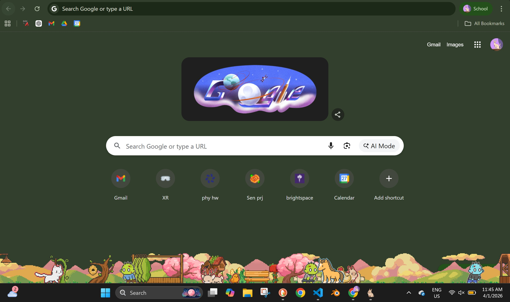
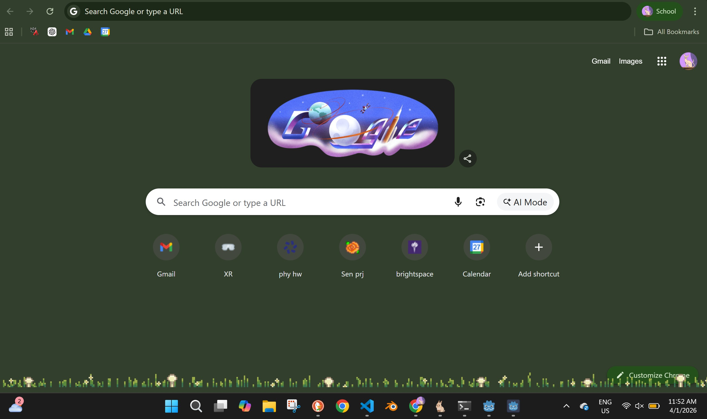

Senior Project
INTERIM
Sutton Fritz
Week 9.
As I continued to develop Interim, I also continued researching and ideating unique mechanics for the game. Consequently, I discovered the ‘idle game’ genre. Idle games are played passively while the player gives most of their attention to another task at hand. I am taking a lot of inspiration from
Tint Pasture
, a desktop idle game.

The near-infinite gameplay loop for Tint Pasture is to raise an animal, that animal generates tokens, and spend the tokens to purchase more animals. To add complexity, the player also needs to feed and clean up after the virtual animals. The most interesting aspect of Tiny Pasture is that the game window’s height is only a few pixels tall, and it sits on top of the task bar on your computer, which allows for most of the player’s display to view other windows.
For Interim, instead of animals that generate currency, trees will generate building wood and apples. Instead of collecting farm animals, the player can build with the wood, which allows for completely unique game-space customization.
I presented this new development to my game idea at the midterm demo where I received some very valuable feedback. The most provoking comment I received was to challenge the instant gratification present in many other games. This shifted my perspective into viewing time and space as a resource (hunger, health, energy, etc.)-- the limitations of the game window, and the time required to gather resources are now a core gameplay mechanic instead of limitations. In addition, I asked if Interim’s perspective should be top-down or side-on. The consensus was that it should be side-on (the same as Tiny Pasture), which I agree with since it will allow a clear POV of what the player is building.
I began creating a desktop application in the game engine Godot using a tutorial by
mellowminx
on YouTube and using my own sprites. The tutorial was helpful as a starting point, but lacks many of the core game mechanics I want to incorporate, such as building and crafting. Therefore, exploring these topics is where I will continue researching in the coming week.
